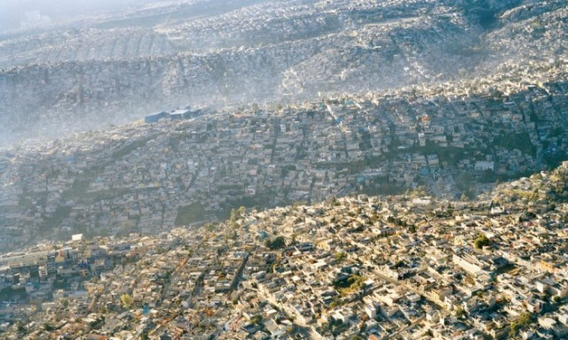

LA CONTAMINACIÓN

La Contaminación se denomina a la presencia en el ambiente de cualquier agente químico, físico o biológico nocivos para la salud o el bienestar de la población, de la vida animal o vegetal.
Esta degradación del medio ambiente por un contaminante externo puede provocar daños en la vida cotidiana del ser humano y alterar las condiciones de supervivencia de la flora y la fauna.
La contaminación puede ocurrir, en el suelo, la tierra y el aire.
Se puede dividir en clases según los agentes contaminantes o el medio afectado:
Se entiende por contaminación atmosférica a la presencia en el aire de materias o formas de energía que implican riesgo, daño o molestia grave para las personas y bienes de cualquier naturaleza, así como que puedan atacar a distintos materiales, reducir la visibilidad o producir olores desagradables.
La contaminación hídrica o contaminación del agua es una modificación de esta, generalmente provocada por el ser humano, que la vuelve impropia o peligrosa para el consumo humano, la industria, la agricultura, la pesca y las actividades recreativas, así como para los animales.
La contaminación del suelo consiste en la acumulación de sustancias a unos niveles tales que repercuten negativamente en el comportamiento de los suelos. Las sustancias, a esos niveles de concentración, se vuelven tóxicas para los organismos que viven en él. Se trata de una degradación química que provoca la pérdida parcial o total de su productividad.
Se llama contaminación acústica o contaminación sonora al exceso de sonido que altera las condiciones normales del ambiente en una determinada zona. Si bien el ruido no se acumula, traslada o mantiene en el tiempo como las otras contaminaciones, también puede causar grandes daños en la calidad de vida de las personas si no se controla bien o adecuadamente.
La Contaminación química es la alteración nociva del estado natural de un medio como consecuencia de la introducción de un agente totalmente ajeno a ese medio (contaminante), causando inestabilidad, desorden, daño o malestar en un ecosistema, en el medio físico o en un ser vivo.
Se denomina contaminación radiactiva o contaminación nuclear a la presencia no deseada de sustancias radioactivas en el entorno. Esta contaminación puede proceder de radioisótopos naturales o artificiales.

La contaminación térmica es el deterioro de la calidad del aire o del agua a causa del incremento o descenso de la temperatura. Las causas de este tipo de contaminación están muy bien identificadas y estudiadas, pero las consecuencias a la que nos enfrentamos son difíciles de revertir sin la acción drástica de gobiernos, empresas y ciudadanos.
El concepto de contaminación electromagnética, también conocida como electropolución, se refiere a la presunta existencia de una exposición excesiva a las radiaciones de espectro electromagnético (o campos electromagnéticos) generadas por equipos electrónicos u otros elementos producto de la actividad humana.
contaminacion debida a la presencia de virus, bacterias, esporas fúngicas, protozoos, algas, películas animales y excreciones animales. Los contaminantes microbiológicos viven y se reproducen a menudo en microclimas como los subsuelos húmedos y los cuartos de baño. Los colectores de condensado y los serpentines de los intercambiadores de calor, los colectores de condensado y de descongelación de los frigoríficos y las canalizaciones ofrecen a menudo un microclima si no se instalan y mantienen correctamente. Los humidificadores que no calientan el agua pueden ser una fuente de contaminación microbiológica.
El tráfico rodado: los coches y camiones son los mayores contaminantes urbanos porque a diario circulan arrojando al aire gases tóxicos perjudiciales para la salud. Estos vehículos contaminan a causa de la combustión de los hidrocarburos que utilizan para moverse, y el desgaste de los frenos y ruedas.
Los Combustibles fósiles: el confort y el bienestar de los habitantes de las grandes ciudades trajo como consecuencia el aumento en el consumo de combustibles fósiles. La producción de carbón, de petróleo y de gas natural crece de la mano del ascenso de los niveles de contaminación del aire, del suelo y del agua del planeta.
El índice de población mundial ha crecido a distinto ritmo que la tasa de mortalidad, hecho que ha impactado sobre el medioambiente: provocando la ineficiencia en el tratamiento de las aguas residuales domésticas, el aumento del consumo irreflexivo y la generación de toneladas de basura.
La deforestación: la tala indiscriminada en bosques y selvas impide que los árboles, encargados de purificar el aire, realicen esta tarea y que miles de animales y plantas se extingan por no tener un lugar donde vivir y crecer.
Los pesticidas y los productos químicos utilizados en los cultivos llegan a contaminar el suelo y el agua de la zona en que se sembró. Llegando incluso a contaminar, de forma alarmante, a muchos alimentos.
En las ciudades existe otra fuente de contaminación como son las construcciones y las demoliciones: estas actividades desprenden polvos y gases que dañan el aire de la zona en que se desarrollan, y a su vez contaminan el agua donde arrojan sus desechos.
El progreso tecnológico beneficia a nivel económico y social, pero la proliferación de industrias y la falta de control ambiental en sus procesos, ha perjudicado el ecosistema por la gran cantidad de residuos arrojados al aire, en ríos y mares.
El ser humano siempre ha pensado en su evolución, en su futuro y en su bien; sin tener en cuenta la naturaleza, los animales y los ecosistemas que cohabitan con él. Sin embargo, cada vez debe atender más a estas necesidades ya que con su actuación está desencadenando las siguientes consecuencias:
Desapareciendo ecosistemas, volviendo a la tierra estéril y dejándola sin recursos.

Aumentando enfermedades como el cáncer de pulmón, el asma, enfermedades cardiovasculares o irritaciones.
Derritiendo los glaciares y polos, extinguiendo especies y aumentando el nivel de los océanos.

El resultado de las actividades humanas o de los químicos como los clorofluorocarbonos (CFCs) liberados a la atmósfera, contribuyen al agotamiento de la capa de ozono.
Debido al uso constante de insecticidas y pesticidas, en un futuro, el suelo se volverá infértil y las plantas no serán capaces de crecer adecuadamente.
1.No quemar ni talar plantas
2.Controlar el uso de fertilizantes y pesticidas
3.No botar basura en lugares inapropiados
4.Regular el servicio de aseo urbano
5.Crear conciencia ciudadana
6.Crear vías de desagües para las industrias que no lleguen a los mares ni ríos utilizados para el servicio o consumo del hombre ni animales
7.Controlar los derramamientos accidentales de petróleo
8.Controlar los relaves mineros
En la comunidad de San Pedro Benito Juárez no hay mucha contaminación por asi decirlo puesto que no es una zona urbana y los unicos tipos de contaminación que existe en esta comunidad son los siguientes:
Bueno en si aqui no se desprenden muchos gases como el CO2 pues porque aqui casi no se utiliza el automovil,es decir que no se queman combustibles fosiles. El volcan es el unico que hace la mayor contaminacion puesto que arroja gases constantemente.
Lo que si es un problema es el cuidano del suelo puesto que porque tiran mucha basura al igual que dejan materiales de contrucción abandonados y pues a mi parecer solo seria eso lo que afecta al suelo.
Otro gran problema es la contaminación visual pues porque la verdad si hay muchos grafitis que hacen dar una mala apariencia de las calles y paredes,hay grafitis a cada esquina y pues eso seria toda la contaminacion que hay en San Pedro Benito Juárez
Bueno pues la manera de solucionar estos problemas de contaminación seria que pusieran botes de basura en ciertas esquinas y bueno también para que asi la gente no tire la basura en al calle y ademas de multar a las personas que las vean tirando basura y para combatir la contaminacion visual seria a que a quien sorprendar pintanto paredes que sean detenidos ya que es un delito y que también pues repinten las paredes que fueron grafiteadas y tambien dar conferencias en las escuelas acerca de este tema.